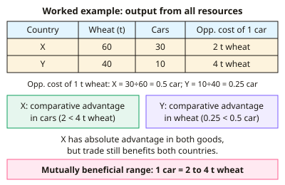

A-level Economics Year 13 · Topic 15
International trade and the balance of payments
This topic explains why countries trade, and how all of a country's international transactions are recorded in the balance of payments.
We start with comparative advantage and the terms of trade, then look at protectionism, trading blocs and the World Trade Organisation.
Finally we examine current account deficits and surpluses, what causes them, and the policies used to correct them.
- 7 subtopics
- 184 questions
- Free: 15.1 notes and 10 questions
In this topic
- 15.1Absolute and comparative advantage: opportunity cost, specialisation and limitationsFree below · 21 questions
- 15.2Patterns of trade and the terms of tradeOpen in Full Marks · 26 questions
- 15.3Free trade and protectionism: tariffs, quotas, subsidies and non-tariff barriersOpen in Full Marks · 29 questions
- 15.4Trading blocs, customs unions and the World Trade OrganisationOpen in Full Marks · 31 questions
- 15.5The balance of payments: current, capital and financial accountsOpen in Full Marks · 26 questions
- 15.6Causes and consequences of current account deficits and surplusesOpen in Full Marks · 21 questions
- 15.7Policies to correct imbalances: expenditure-switching and expenditure-reducing policiesOpen in Full Marks · 30 questions
15.1 · Free notes
Absolute and comparative advantage: opportunity cost, specialisation and limitations

Key points
- Absolute advantage: a country can produce more of a good than another country using the same resources. Equivalently, it can produce a given output using fewer resources.
- Opportunity cost is the value of the next best alternative forgone. On a PPF, the opportunity cost of good X = quantity of Y given up ÷ quantity of X gained, which is the slope of the PPF.
- Worked method: if a country makes 60 t wheat or 30 cars, the opportunity cost of 1 car = 60 ÷ 30 = 2 t wheat, and of 1 t wheat = 0.5 car. The opportunity costs of the two goods are reciprocals.
- Comparative advantage (Ricardo): a country has it in a good if it has a lower opportunity cost of producing that good than another country. Countries should specialise in the good where their opportunity cost is lowest.
- A country can have an absolute advantage in every good yet a comparative advantage in only one. A country with an absolute disadvantage in everything still has a comparative advantage where its disadvantage is smallest.
- Gains from trade: if countries specialise and trade at terms of trade between the two opportunity costs, both can consume beyond their own PPF. For example, if one car costs 2 t wheat in X and 4 t in Y, any rate between 2 and 4 t per car benefits both.
- Benefits of specialisation and trade: higher world output, lower prices, greater choice, economies of scale, more competition and efficiency, and a spur to growth.
- Assumptions that limit the model: constant opportunity costs (in reality they increase), zero transport costs, no trade barriers, perfect factor mobility, perfect information, two countries and two goods, and a static world.
- Real-world limitations: over-specialisation exposes a country to price and demand shocks and to structural unemployment. Strategic dependence on imports, environmental costs, and the fact that comparative advantage can erode are further problems.
- Dynamic comparative advantage: advantage changes over time through investment in capital, education, technology and exchange-rate changes (for example South Korea moving from textiles to electronics). Factor endowments (land, labour, capital) help explain initial advantage.
- Exam technique: calculate the opportunity cost for BOTH countries, compare them, state who has the comparative advantage, then evaluate. Evaluation points include whether the assumptions hold, transport costs, the risk of over-reliance, and whether gains are shared fairly.
In more detail
- Better at both, still gains: Country A can make 100 food or 50 cloth, Country B 30 food or 30 cloth. A's opportunity cost of 1 cloth = 2 food, B's = 1 food, so B specialises in cloth and A in food, even though A is better at both.
- Terms of trade that suit both: in that example any rate between 1 and 2 food per cloth makes both countries better off, for example 1.5 food for 1 cloth.
- Proving the gain: with half their resources on each good, total output is 65 food and 40 cloth. If B makes only cloth (30) and A makes 70 food and 15 cloth, world output becomes 70 food and 45 cloth, more of both.
- Input data trap: if a table shows hours needed per unit, fewer hours means absolute advantage, and the opportunity cost of X = hours for X ÷ hours for Y.
Practice
Absolute and comparative advantage: opportunity cost, specialisation and limitations: 10 questions
Pick an answer to check it, or open the answer for the explanation.
1. Country A can produce either 20 tonnes of tea or 40 tonnes of rice using all its resources. What is the opportunity cost of one tonne of tea?
- 2 tonnes of rice
- 40 tonnes of rice
- 0.5 tonne of rice
- 20 tonnes of rice
Show answer
A: 2 tonnes of rice. Giving up 40 t of rice to gain 20 t of tea means 40 ÷ 20 = 2 t of rice per tonne of tea.
2. In one period X makes 100 shirts or 50 laptops; Y makes 60 shirts or 20 laptops. Which statement is correct?
- Neither country gains from trade because X has absolute advantage in both
- Y has comparative advantage in laptops because it has an absolute disadvantage
- Y has comparative advantage in laptops: 3 shirts forgone per laptop, against 2 in X
- X has comparative advantage in laptops: 2 shirts forgone per laptop, against 3 in Y
Show answer
D: X has comparative advantage in laptops: 2 shirts forgone per laptop, against 3 in Y. Opportunity cost of a laptop: X = 100 ÷ 50 = 2 shirts; Y = 60 ÷ 20 = 3 shirts. X's is lower, so X has comparative advantage in laptops and Y in shirts.
3. Which statement about advantage in trade is correct?
- A country with absolute advantage in all goods cannot gain from trade
- Absolute advantage means a lower opportunity cost
- Comparative advantage exists only when output per worker is higher
- A country can have comparative advantage in a good without absolute advantage
Show answer
D: A country can have comparative advantage in a good without absolute advantage. Comparative advantage depends on relative (opportunity) costs. A country less productive in everything still has it in the good where its disadvantage is smallest.
4. X's opportunity cost of 1 car is 2 tonnes of wheat; Y's is 4 tonnes. At which exchange rate would both countries gain from trade?
- 1 car for 2 tonnes of wheat
- 1 car for 5 tonnes of wheat
- 1 car for 3 tonnes of wheat
- 1 car for 1 tonne of wheat
Show answer
C: 1 car for 3 tonnes of wheat. X must receive more than 2 t of wheat per car and Y must pay less than 4 t, so any rate between 2 and 4 t works. 3 t is the only option in that range.
5. Which is an assumption of the simple theory of comparative advantage that limits its real-world relevance?
- Countries have identical factor endowments
- Transport costs are zero and there are no trade barriers
- Opportunity costs rise as output increases
- All firms are monopolists
Show answer
B: Transport costs are zero and there are no trade barriers. The model assumes zero transport costs and free trade, which do not hold in reality. It also assumes constant (not rising) opportunity costs, and differing factor endowments.
6. A small economy earns 80% of its export revenue from copper. Which risk of specialisation does this most clearly illustrate?
- An inevitable loss of absolute advantage
- Vulnerability to falls in world copper prices or demand
- Lower economies of scale in copper
- Automatically improving terms of trade
Show answer
B: Vulnerability to falls in world copper prices or demand. Dependence on one export exposes income, jobs and the balance of payments to price volatility and demand shocks in that single market.
7. UK: 2 hours per unit of cloth or 4 hours per unit of wine. Portugal: 1 hour per unit of cloth or 3 hours per unit of wine. Which statement is correct?
- The UK has comparative advantage in cloth
- The UK has comparative advantage in wine: 2 cloth forgone, against 3 in Portugal
- Portugal has comparative advantage in wine
- Portugal has no comparative advantage in either good
Show answer
B: The UK has comparative advantage in wine: 2 cloth forgone, against 3 in Portugal. Opportunity cost of wine: UK = 4 ÷ 2 = 2 cloth; Portugal = 3 ÷ 1 = 3 cloth. The UK's is lower, so it has comparative advantage in wine although Portugal is faster at both.
8. South Korea moved from textiles to electronics as it invested in education and technology. This best illustrates:
- Static absolute advantage
- The Marshall–Lerner condition
- A fall in the terms of trade
- Dynamic comparative advantage
Show answer
D: Dynamic comparative advantage. Comparative advantage is not fixed. Investment in human and physical capital changes opportunity costs over time and shifts a country's pattern of specialisation.
9. A country can make 80 units of A or 40 units of B (straight-line PPF). How many units of B must it give up to make 20 units of A?
- 40
- 20
- 10
- 5
Show answer
C: 10. With constant opportunity cost, 1 A costs 40 ÷ 80 = 0.5 B, so 20 A costs 20 × 0.5 = 10 B.
10. P makes 30 phones or 60 tablets; Q makes 20 phones or 20 tablets. Which statement is correct?
- P has no comparative advantage in anything
- Q has comparative advantage in phones despite an absolute disadvantage
- Q has comparative advantage in tablets
- P has comparative advantage in phones because it makes more phones
Show answer
B: Q has comparative advantage in phones despite an absolute disadvantage. Opportunity cost of a phone: P = 60 ÷ 30 = 2 tablets; Q = 20 ÷ 20 = 1 tablet. Q's is lower, so Q has comparative advantage in phones although P can make more of both.
Keep going in Full Marks
Full Marks has 21 questions on Absolute and comparative advantage: opportunity cost, specialisation and limitations (11 more than here), set out in practice levels. You also get notes and 3D models for all 7 subtopics of International trade and the balance of payments, plus games, timed exams and past papers.